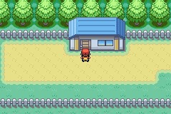
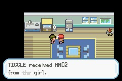
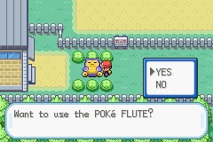
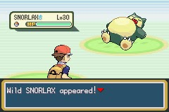
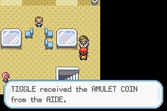

บทที่ 14 / 29
ถนนสาย16-18 (ทางจักรยาน)<Cycling Road>
❖
ที่ต้นถนนสาย16ให้ตัดต้นไม้เล็กๆ แล้วเดินเข้าไปจนสุด จะเจอบ้านหลังหนึ่ง ผู้หญิงข้างในจะให้ HM02 Fly มา สอนท่านี้ให้โปเกมอนของเรา จะทำให้เราบินไปเมืองที่เคยไปแล้วได้


ก่อนเข้าสู่ทางจักรยาน จะพบโปเกมอน ”คาบิก้อน” เลเวล30 นอนขวางทางอยู่ ให้ใช้ Poke Flute ปลุกมันขึ้นมาสู้กับเรา จะจับหรือไม่จับก็ได้ เพราะในเกมยังมีอีกตัว เมื่อจับหรือกำจัดแล้ว เราก็สามารถไปต่อได้


จากนั้นเข้าไปในอาคาร ขึ้นชั้นสอง คุยกับนักวิจัย ถ้าเรามีโปเกมอนมากกว่า40ตัวขึ้นไป เราจะได้รับ Amulet Coin

แล้วให้เราขี่จักรยานผ่านทางจักรยานลงมาเรื่อยๆ ซึ่งมีลักษณะเป็นเนินลาดชัน ตัวเราจะไหลลงไปเอง ถ้าต้องการเบรกให้กดปุ่ม B ลงมาจนถึงถนนสาย18 แล้วเลี้ยวขวาไปยังเมืองเซคิชิคุ